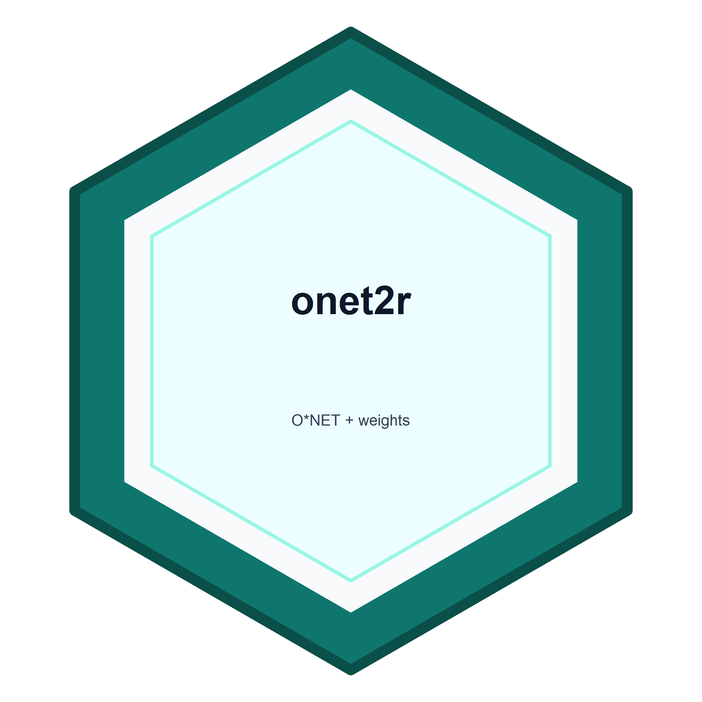
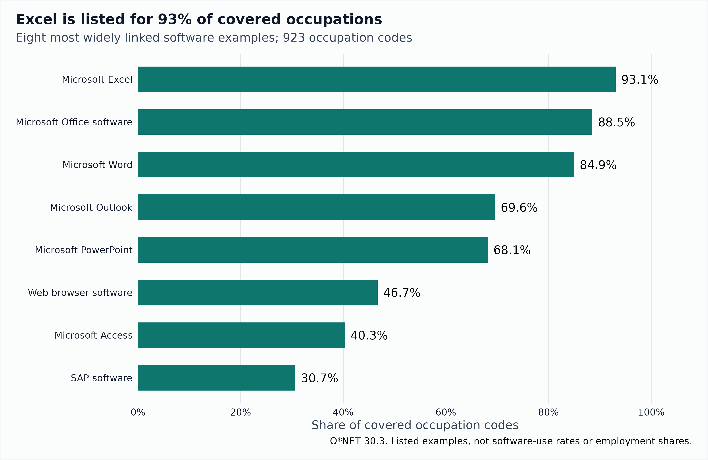
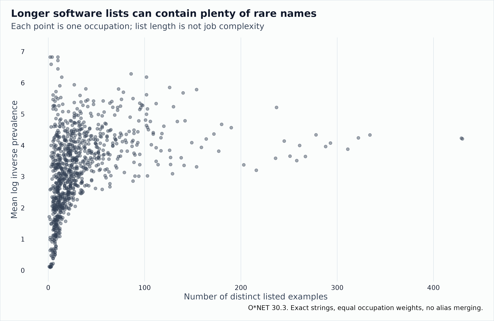
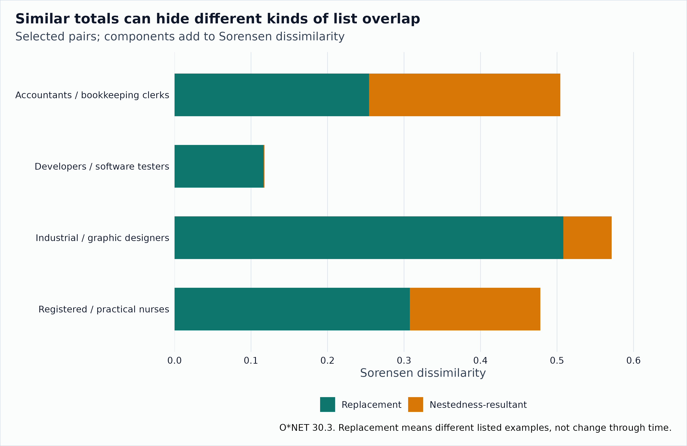
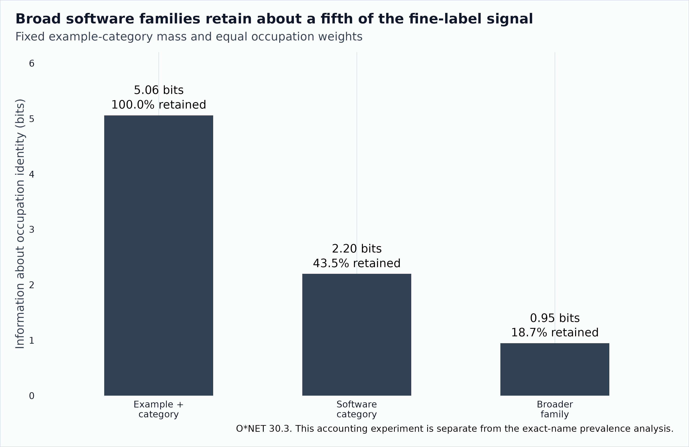

What Software Lists Tell Us About Occupations
Source:vignettes/software-distinctiveness.Rmd
software-distinctiveness.RmdAn accountant and a nurse might both have Excel on their software lists. That does not make their jobs alike. But the rest of each list might tell us something useful about how their work differs.
The activity article looks at what occupations are described as doing. This one looks at the software examples attached to them. We keep those questions separate, then ask whether they point to the same occupational neighbors.
These are listed examples in O*NET, not observations of which programs individual workers open. A missing example does not prove that nobody in an occupation uses it. Employment weights can tell us how much employment is associated with the mapped descriptions. They cannot turn a software list into a usage survey.
Start with something familiar
The frozen O*NET 30.3 archive lists Microsoft Excel for 859 of the 923 covered occupations, or 93.1 percent. Word, Outlook, and PowerPoint also appear widely.
The denominator counts published data-level occupation codes. It is smaller than the 1,016 titles in the full occupation lookup, which also contains non-data-level entries. Some broad descriptions coexist with named specialties. Counting these codes equally is useful for comparing records, but does not make them disjoint groups of workers.

The eight software examples listed for the largest shares of the 923 covered occupations. Each occupation counts once per exact example string.
| Listed software example | Occupation codes | Share of covered codes |
|---|---|---|
| Microsoft Excel | 859 | 0.931 |
| Microsoft Office software | 817 | 0.885 |
| Microsoft Word | 784 | 0.849 |
| Microsoft Outlook | 642 | 0.696 |
| Microsoft PowerPoint | 629 | 0.681 |
| Web browser software | 431 | 0.467 |
| Microsoft Access | 372 | 0.403 |
| SAP software | 283 | 0.307 |
This already looks different from the detailed work activities. The most common DWA appears in fewer than one in ten covered occupations. The software list contains shared office programs alongside very specific applications. The two vocabularies were built at different levels of detail, so their prevalence numbers should not be read as a contest over which part of work is more general.
Rare names are easy to find
There are 8,753 distinct exact example strings. Of those, 6,139 appear in only one covered occupation. A rarity calculation will notice those names. Whether that is useful depends on the question.
We use the same transparent baseline as the activity article. Each
occupation gets one vote. An example’s inverse document frequency is
log(number of occupations / number listing the example). An
occupation’s rarity summary is the mean of those values across its list.
This makes Excel contribute little and a singleton contribute much more.
These IDFs use natural logarithms. The information budget later uses
bits.
It does not make the singleton more valuable, harder to learn, or more important to a worker’s day.

Software rarity and inventory length for all 923 covered occupations. The relationship is descriptive and may reflect how the example lists were compiled.
| Listed examples | Occupation codes | Median rarity | Minimum rarity | Maximum rarity |
|---|---|---|---|---|
| 1 to 10 | 250 | 2.13 | 0.10 | 6.83 |
| 11 to 30 | 374 | 3.10 | 1.09 | 6.18 |
| 31 to 100 | 241 | 3.99 | 2.46 | 6.29 |
| 101 or more | 58 | 4.22 | 3.02 | 6.19 |
List length is worth watching. It ranges from 1 to 430 examples, and its rank correlation with rarity is 0.55. Here, longer lists tend to contain more unusual names too. That is the opposite direction from the activity snapshot’s inventory-size relationship. A list is partly a record of what has been documented, so neither direction settles how broad or specialized the underlying job is.
Three occupations tie at the maximum possible mean IDF in this snapshot: Reinforcing Iron and Rebar Workers, Roof Bolters in Mining, and Musical Instrument Repairers and Tuners. Every example on each of their lists is a singleton. Their lists have four, two, and ten examples, respectively. Each is equally distant from every other occupation under the binary total-variation rule. Calling one neighbor the “closest” would hide a 922-way tie.
Similarity needs more than a shared spreadsheet
Software Developers and Software Quality Assurance Analysts and Testers share 379 listed examples. Their lists contain 430 and 429 examples, respectively. Registered Nurses and Licensed Practical and Licensed Vocational Nurses share 18 examples, from lists of 43 and 26. There is overlap, but the longer list also contains many examples that the shorter one does not.
| Occupation A | Occupation B | Examples A | Examples B | Shared examples | Profile distance |
|---|---|---|---|---|---|
| Accountants and Auditors | Bookkeeping, Accounting, and Auditing Clerks | 237 | 118 | 88 | 0.629 |
| Software Developers | Software Quality Assurance Analysts and Testers | 430 | 429 | 379 | 0.119 |
| Commercial and Industrial Designers | Graphic Designers | 61 | 79 | 30 | 0.620 |
| Registered Nurses | Licensed Practical and Licensed Vocational Nurses | 43 | 26 | 18 | 0.581 |
The distance is total variation between equally weighted example lists. For list sizes and sharing examples, it is . It is zero for identical lists and one for disjoint lists. The larger inventory affects the result even when the smaller list is entirely contained in it.
Changing the distance changes some neighbors. With five-neighbor sets (including ties), total variation and Jaccard have a median set overlap of 0.43. Here overlap means shared neighbors divided by the size of their union. Jaccard uses the union of example lists as its denominator, whereas total variation compares their normalized shares. Neither is the uniquely correct answer to every similarity question.
These comparisons describe software examples. They do not establish that a developer can move easily into testing, or that the difference between nursing roles is mostly software.
Is the shorter list mostly inside the longer one?
A useful distinction comes from ecology. Two places can differ because they contain different species, or because one contains a subset of the other’s species. The same set arithmetic helps with software lists, without assuming that a missing software link means non-use.
For the nursing pair, 18 of the 26 examples on the shorter list also appear on the longer one. For the developers and testers, 379 of 429 do. Those fractions tell us something that a distance alone leaves out.

Selected software-list comparisons using the Sorensen decomposition. This is a different total from the total-variation distance used for the primary neighbors.
| Pair | Shorter list shared (%) | Replacement | Nestedness-resultant | Sorensen total |
|---|---|---|---|---|
| Accountants / bookkeeping clerks | 74.6 | 0.254 | 0.250 | 0.504 |
| Developers / testers | 88.3 | 0.117 | 0.001 | 0.118 |
| Industrial / graphic designers | 49.2 | 0.508 | 0.063 | 0.571 |
| Registered / practical nurses | 69.2 | 0.308 | 0.171 | 0.478 |
The last three columns use Baselga’s pairwise decomposition. If examples are shared and occur in only one list, the total is . The replacement component is , and the remainder is called nestedness-resultant dissimilarity. The components add to the Sorensen total, not to the total-variation distance above.
The terminology needs care. Replacement here means different listed examples, not programs being replaced over time. The remainder depends on shared items as well as list sizes. It is zero for disjoint lists, even if their sizes differ. Neither component tells us why the lists were documented differently. We use them to explain selected pairs and keep the original neighbor rankings.
The accountants/bookkeeping pair has a total of about 0.50, split almost equally between the two components. The industrial/graphic-design pair has a somewhat larger total, about 0.57, mostly from different examples. Those are different explanations of a list difference, even though the totals are fairly close.
Broader labels keep some distinctions and lose others
We can group the examples into O*NET’s software categories and then into broader families. Before doing that, we need to settle what an item is.
There are 151 exact example strings assigned to more than one category somewhere in the archive. In this release, none has multiple category rows within the same occupation. The ambiguity is across occupations. Choosing one global category for each name would overwrite those published assignments.
For this section only, the fine item is an example-category pair. There are 8,908 such labels rather than 8,753 names. We draw an occupation uniformly, then draw one of its listed pairs uniformly. Every pair has one recorded category and one broader parent. Grouping keeps the original mass. This is a separate accounting experiment from the exact-name prevalence analysis above.
The name-only draw carries 5.031 bits. Keeping each name’s category annotation adds 0.030 bits. That small difference is recorded separately so the classification annotation does not get mistaken for extra detail in the software names themselves.

Occupation-identifying information in a fixed draw from listed example-category pairs, their 134 software categories, and their 17 broader families. Percentages use fine-pair information as the denominator.
| Vocabulary | Labels | Information (bits) | Fine-label information retained (%) |
|---|---|---|---|
| Example-category pair | 8908 | 5.06 | 100.00 |
| Software category | 134 | 2.20 | 43.45 |
| Broader family | 17 | 0.95 | 18.72 |
Broader families retain about 18.7 percent of the fine-label information about occupation identity under this draw. Some loss is guaranteed when labels are grouped. The amount tells us what this particular classification discards, not whether broader categories are bad. “Database software” may be exactly the level we need for one question and too broad for another.
Re-counting every category as simply present or absent would answer a different question. It is useful for category prevalence, but it is not the same mass-preserving calculation.
The binary category view also changes the neighbors. At five neighbors, its median set overlap with the exact-name comparison is 0.11. The bundled sensitivity table includes one-, five-, and ten-neighbor sets, with cutoff ties retained. A result about “similar software” needs to say which of these resolutions and distances it uses.
What these lists leave open
We preserve exact spelling as the baseline. Lowercasing and trimming repeated or surrounding whitespace change neither the number of distinct names nor the number of links in this snapshot. That check does not resolve product aliases, renamed applications, or the overlap between a software suite and its individual programs. Those would need a reviewed crosswalk.
The Hot Technology and In Demand flags are also different from usage. The former concerns requirements appearing frequently across employer job postings. The latter concerns postings for the particular occupation. Neither is a numeric estimate of how frequently workers use a program.
The practical next question is whether these software neighbors agree with neighbors based on activities and required skills. The companion activity article makes that comparison on common occupation codes and keeps the distances separate. An overlap is a similarity between records. A disagreement is a useful pair to inspect, not proof that one domain has found the “real” occupation.
Reproduce the snapshot
Article builds read bundled derived tables and make no network requests. The package does not export a software-distinctiveness score. To regenerate the tables from the pinned public ZIP, run from the repository:
# Download the public 30.3 text archive separately, then:
# Rscript data-raw/occupational-software.R path/to/db_30_3_text.zipThe script checks the archive’s SHA-256, audits item identity, and
writes the prevalence, occupation summaries, neighbors, selected pairs,
coverage, resolution, and provenance tables. The full-archive snapshot
is separate from the small stylized fixtures used to test the formulas.
The largest tables are losslessly compressed as .csv.gz;
base R’s read.csv() reads those files directly.
This article derives information from the O*NET 30.3 Database by the U.S. Department of Labor, Employment and Training Administration (USDOL/ETA), under CC BY 4.0. O*NET is a trademark of USDOL/ETA. The prevalence, distances and information calculations are modifications by onet2r, not approved, endorsed or tested by USDOL/ETA.